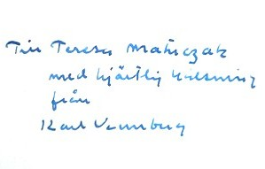

När Teresa var i koncentrationlägret i Ravensbrück skrev hon bland andra denna dikt. I Ravensbrück fick hon veta att hennes mor och syster var i koncentrationlägret i Auschwitz. Hon bemödade sig på alla sätt att komma till Auschwitz för att vara tillsammans med dem. Till slut lyckades hon. Tyvärr hittade hon systern utkastad på gatan, döende. Hon fick också veta att modern tidigt på morgonen hade förts till gaskammmaren.
Nie wiem, czy to jest prawda, czy mi sie tylko snilo,
Nie wiem, bo to zbyt piekne, aby naprawde bylo,
Ze istinial ktos, kto mnie ukochal do ostatka:
Ze byla Matka!
I tylko glucha noca, gdy cicho spi swiat caly.
Z ojczystych drzew melodia, co niegdys mi szumialy,
Powraca ktos, kto wiernym bedzie do ostatka,
Powraca Matka!
Pochyla sie nademna, jak zjawa, mara senna
Ksiezycem perzeswiwtlona, miloscia przepromienna,
I mowi, ze zostanie przy mnie do ostaka,
Bo Ona Matka!
I czuje na swym czole Jej dlonie spracowane
I patrza na mnie oczy matczyne, ukochane
I mowia, ze byc silna trzeba do ostatka,
Bo tak chce Matka!
Choc nie wiem, czy to prawda, czy mi sie tylko snilo,
Lecz szuje, ze jest serce co dla mnie zawsze bilo -
Gdy mnie opuszcza - to zawsze do ostatka
Zostanie Matka!
Teresa Aniela Trojanowska
Rawensbrueck, grudzien 1940 r.
Vet inte om det är sant eller bara en dröm
Vet ej, det är för vackert för att det skulle vara sant
Att det finns någon som älskar mig till slutet
Och att det är mor.
Och i mörka natten, när hela världen sover
Och med fädernas träds melodi, som fordom brusade för mig
Kommer tillbaka den som förbli trofast till slutet
Åter kommer mor.
Hon lutar sig över mig: företeelse eller vålnad
Genomstrålad av månen med kärleken strålande
Och säger att hon stannar hos mig till slutet
Ty hon är min mor.
Och jag känner hennes händer på min panna
Och hennes älskade moders ögon stirrar på mig
Och säger att vara stark till slutet
Ty så vill min mor.
Ehuru jag vet ej om det är verkligt eller en dröm
Men vet att det finns ett hjärta som alltid slå för mig
Och när alla överger mig, då alltid och till slutet
Stannar ... mor.
Teresa Aniela Trojanowska
Ravensbrück, december 1940
(översättare okänd)
